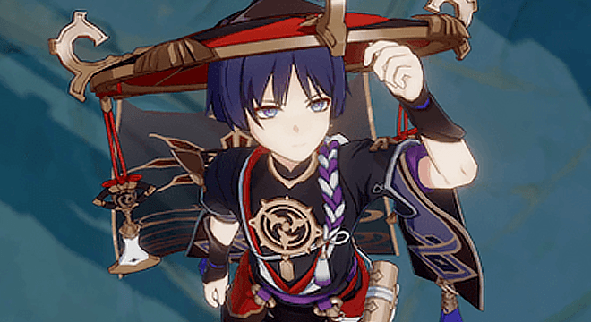

Genshin Impact 3.0:
new region,
elements and characters
On August 24, the third version of Genshin Impact was released. This is a big game patch that includes new characters, enemies, weapons, artifacts, locations, quests, and a new Dendro element.
A little bit of matte.
All of the regions in Genshin have real prototypes. Three states are currently open: Mondstadt (Germany), Li Yue (China), and Inazuma (Japan). In the future, Fontaine (France), Nateline (Latin America), and Snezhnaya (Russia) will become available.

Each region worships a supreme official, the Archonte. And each Archonte is subject to a certain element, of which there are seven: Anemo (air), Geo (earth), Electro (electricity), Dendro (nature), Hydro (water), Pyro (fire) and Cryo (cold). The elements or elements are one of the main components in the game and part of the combat mechanics. They can be applied to both the opponent and the player. Each character has his own element, and the combination of elements causes an elemental effect and gives an attack bonus.
Each element has its own enemies, plants, and oculi - shards of elemental energy (such as electroculus and geocculus). The oculi should be brought to one of the statues of the Seven Archons, which brings good rewards, such as increased stamina.
You are now briefly introduced to the game and can see why Genshin Impact 3.0 is a truly massive experience.
New Region
One of the game's major innovations is the Sumeru Kingdom and the third volume in the story. The last time Inadzuma was added to the game, and that was a year ago. Most likely, the new state is inspired by the ancient Sumerian civilization in Mesopotamia. There may also be influences from Indian culture and Buddhism.

Sumeru is the realm of Dendro the Archon, god of nature. The region is filled with lush rainforests and is home to an important site in the game's lore, the most prestigious Sumeru Academy of Scholars. There is also Port Ormos, through which trade is done, and the Avidanya Rainforest. As usual, the region will gradually expand and add new facilities over time.
One of the abilities of the people of Sumeru is to read the stars. The favorite alcoholic drink of the townspeople is snake tincture. And in the deserts of Sumeru, for some reason, there are always scorched stones.
New element
No playable character controls the Dendro stylus yet, but there are already elemental reactions and attack bonuses with it. For example, Dendro combined with Pyro deals permanent damage to a burning target, and with Electro reduces enemies' resistance. But the new element can not be combined with everything: it does not interact with Anemo, Cryo and Geo. This element will also unlock new reactions, buffs, and builds. In addition, Dendrocules (Dendro-stichi oculi) will appear in the game.
New Characters
The first person in question is the Little Ruler of Kusanali, aka Dendro the Archonte, who is worshipped in Sumeru. Dataminer Blank reports that the character's name is Nahida. This nps will appear in the Golden Apple Archipelago rerun of patch 2.8, and the game is rumored to be in version 3.2. It is also difficult to judge the veracity of the image that represents this character. According to the game lore:
- is a girl;
- she is only 500 years old (the youngest of the Archons of Teivat);
- she commands knowledge.
Tignary - is a five-star Dendro archer.
Colliery - is a four-star Dendro archer.
Dori - is a four-star wandering merchant with a two-handed sword.
Other Characters:
- Dehya - is a four-star Pyro character with a two-handed sword.
- Al Haitham - is a five-star Dendro character (but that's not certain) with a sword (that's not certain either).
- Nilu - is a five-star Hydro character with a sword.
- Caino - is a five-star Electro character with a spear.
- Scaramuccia - is a four-star character with the Catalyst. Presumably possesses the Electro Eye of God.
- Candice - is a four-star Cleopatra.


New Enemies
- Assassin Girls. Drop bandana and Gargoyles, similar to the Guardians of Ruin, shooting cores of chaos.
- Leopards with wings. It is not yet clear whether they will be peaceful, like the kitsune in Inazuma or not.
- Desert Bandits. Local bandits, similar to the Treasure Snatchers in combat style.
- Mushroom Predator. Dendro ostrich with a large tail. Attacks up close and from afar.
- Dendro shamachurls. Creates vines and heals allies.
- Dendro slimes. Hiding under the grass all over Teiwat.
- Electro Fern. A flower of incredible size, throwing out stamens that create a large electric blast.
New Weapons
- Regalia of the Forest - Claymore, 4 stars.
- Moonhawk - shaft, 4 stars.
- Wooden blade - sword, 4 stars.
- Fruit of the Execution - catalyst, 4 stars.
- Armourer of the King - bow, 4 stars.
- Path of the hunter (weapon Tignari) - bow, 4 stars.